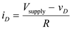
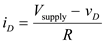
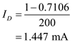
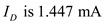

(a)
The current passing through the diode is,

Substituting the values , and in the equation.
Therefore, the estimated value of the diode current  that flows through the diode is .
that flows through the diode is .
(a)
The current passing through the diode is,

Substituting the values , and in the equation.
Therefore, the estimated value of the diode current that flows through the diode is .
(b)
The current  is,
is,

We then use the diode equation to obtain a better estimate for  .
.
Substitute in equation.
Substituting in equation .
Thus the results of the first iteration are .
The second iteration proceeds in a similar manner.

The voltage across the diode is,
Thus the second iteration yields  and .
The third iteration proceeds in a similar manner.
The voltage across the diode is,
Since these values are very close to the values obtained after the second iteration, no further iterations are necessary, and the solution is .
Therefore the more closely estimated diode current using iterative analysis is.